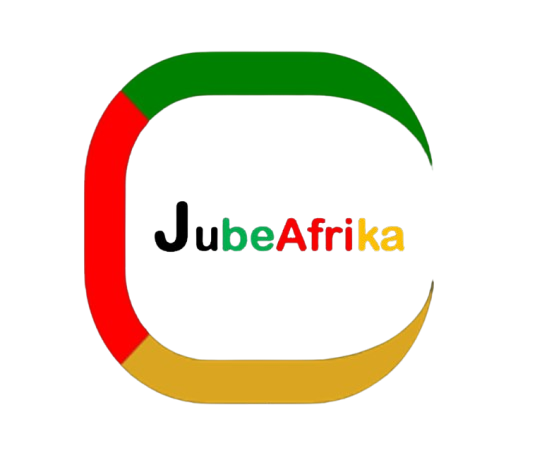
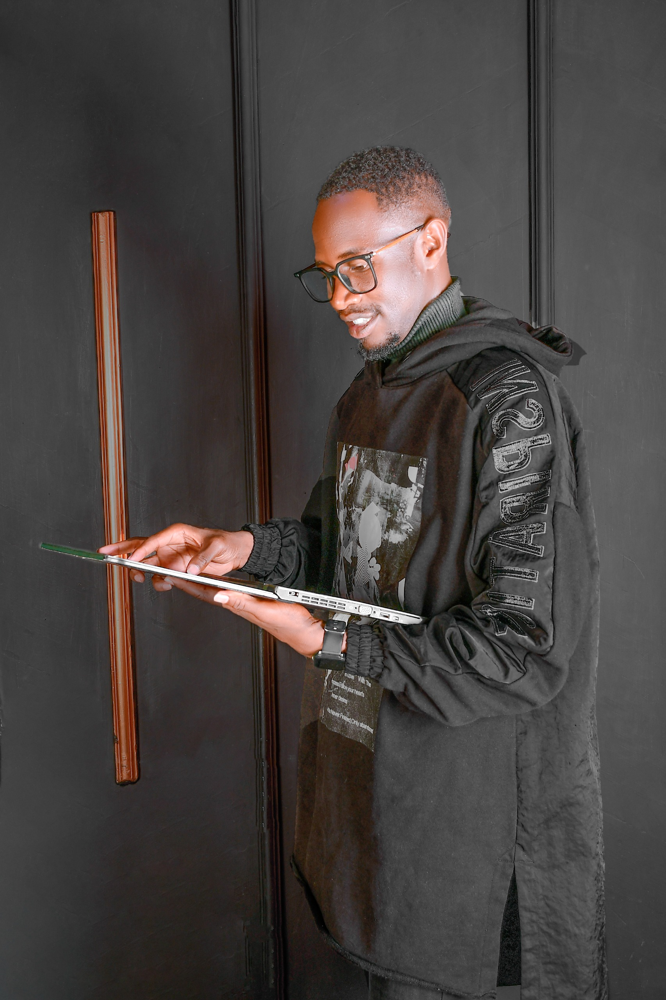

The High-Speed, 100% Offline OCR Document Extraction & Layout Reconstructor Engine
Transform blurry image layouts, printed receipts, and complex text documents back into fully editable Microsoft Word (.docx) files with 100% formatting layout accuracy. Secure your corporate data workflow with our premium desktop processing core—zero internet bundles required and 100% encrypted offline data privacy guaranteed.
Process heavy document conversions locally on your laptop without buying internet bundles. Zero external data tracking paths.
Convert massive multi-page document blocks or full folder structures in seconds, eliminating customer wait lines completely.
Built with unique network hardware node cryptographic authorization bounds, securing your corporate workflow profiles.
A legal summary of software compliance and local commercial registration tracking.
The system runs with zero limits for seven calendar days. On the 8th day, the engine secures the framework and requests activation.
Each permanent license is bound to a single computer using network chip identifiers. Duplicating files onto other machines triggers lockouts.
Share your displayed Computer ID with the AfroBensoft help desk, settle your invoice via mobile money, and receive your uppercase license code.
Follow these three simple operational steps to process conversions locally inside your bureau layout.
Launch the application from your desktop wallpaper shortcut. Click the "Select Input File" dashboard panel button and select your scanned PDF or target document layout image.
Click the "Select Destination" framework panel button. Choose the desktop environment path or the exact system folder where you want your new editable text file to drop.
Click the "Convert Document Layout" button. Watch the tracking progress bar sweep natively to 100%. Your fresh editable Microsoft Word (.docx) file will land in your destination instantly with zero structural distortion!

Chief Executive Officer, AfroBensoft Softwares Group
Looking to hire the best software engineer in Eldoret or a top-tier specialist in web application development in Nairobi? Austine Byron is an elite, highly ranked software developer in Kenya and the founding CEO of AfroBensoft Softwares Group. As an expert systems programmer and an alumnus of the prestigious Eldoret National Polytechnic and Jaramogi Oginga Odinga University of Science and Technology (JOOUST), he specializes in cross-platform desktop frameworks, fluid smartphone systems, and enterprise cloud architectures.
Austine is widely celebrated for his engineering mastery in custom website and web application development, responsive business portals, and secure FinTech apps tailored for the African digital economy. From corporate cloud databases and automated client portals to cross-platform mobile applications (Android and iOS), his deployment layouts run with extreme technical precision. He empowers corporate firms and tech startups in Eldoret, Nairobi, and across East Africa to launch secure financial technology systems and high-speed online platforms.
Whether your company needs to hire a web developer in Kenya for professional corporate website design, or an enterprise-grade system architect for advanced web application development, Austine delivers high-performance, production-ready solutions. His software architectures are natively engineered to be secure, piracy-resistant, and optimized to run smoothly at both device and web levels.
💼 Hire the Top Software Engineer, Web Application & Mobile FinTech Developer: 0790300746